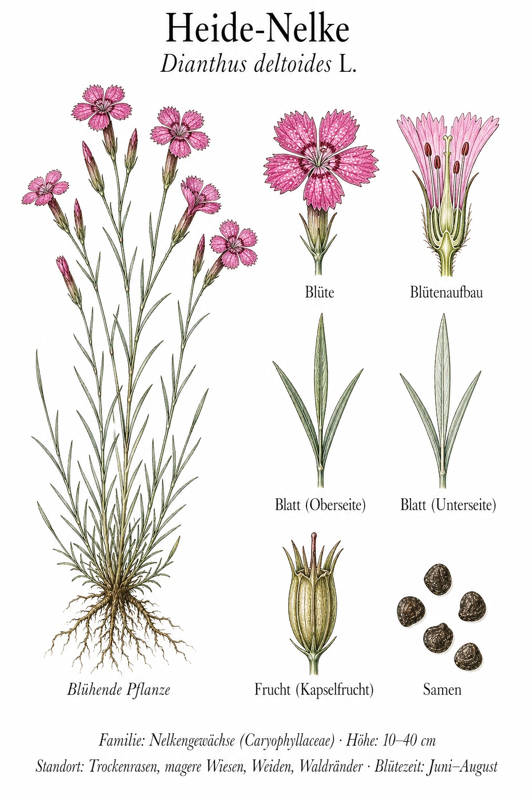
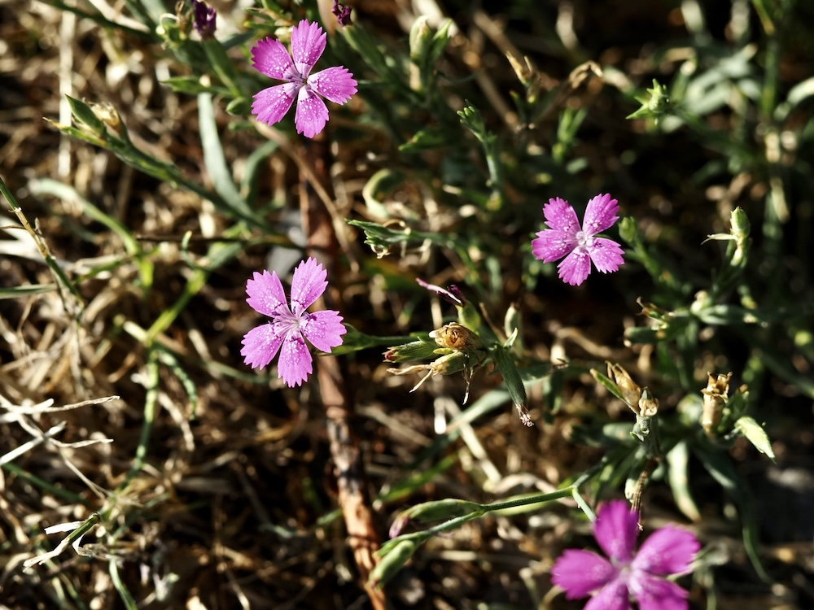
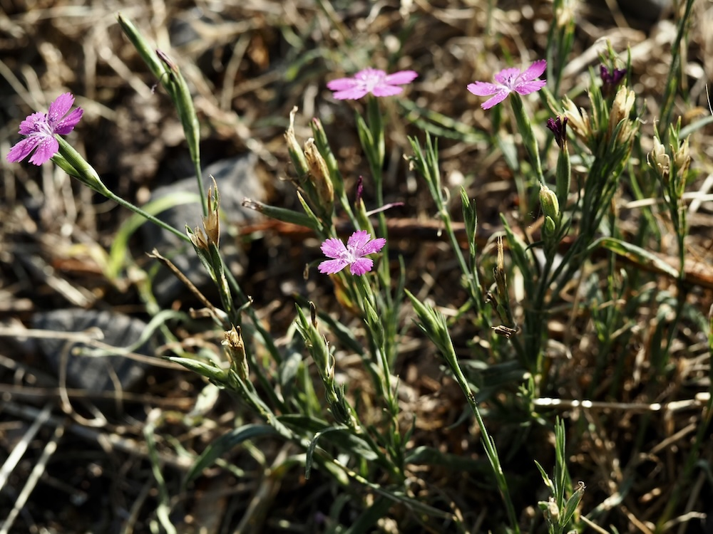

Magenta-Funken im Magerrasen — kleine Nelken für genaue Beobachter.



Versteckt am Boden
Die Heide-Nelke wird leicht übersehen, weil sie im Vergleich zu Wiesen-Storchschnabel oder Margerite winzig ist (oft nur 10–20 cm hoch) und im Gras versteckt wächst. Doch ihre kleinen, magentafarbenen Blüten haben einen eindeutigen Erkennungsring: einen dunkleren, halbkreisförmigen Streifen („Schlund-Auge"), der wie ein Lockfeld für Bestäuber wirkt.
Indikator für Magerrasen
Wo die Heide-Nelke wächst, ist der Boden mager, sauer und sonnig — ein Lebensraum, der in unserer Landschaft selten geworden ist. Sie verschwindet sofort, wenn Wiesen gedüngt oder zu oft gemäht werden. Findet man sie noch, hat man einen besonders wertvollen, naturnahen Standort entdeckt.
Wissenswertes & Merksätze
Erkennungszeichen
Niedriger Wuchs, schmale grasartige Blätter (daher „deltoides" = dreieckig wegen der Blütenblattzeichnung). Blüten einzeln auf dünnen Stielen, fünf Blütenblätter mit fein gezähntem Rand und dunklerem Ring um den Schlund.
Geschützte Art
In Deutschland geschützt — Pflücken verboten. In der Roten Liste mancher Bundesländer als „gefährdet" eingestuft.